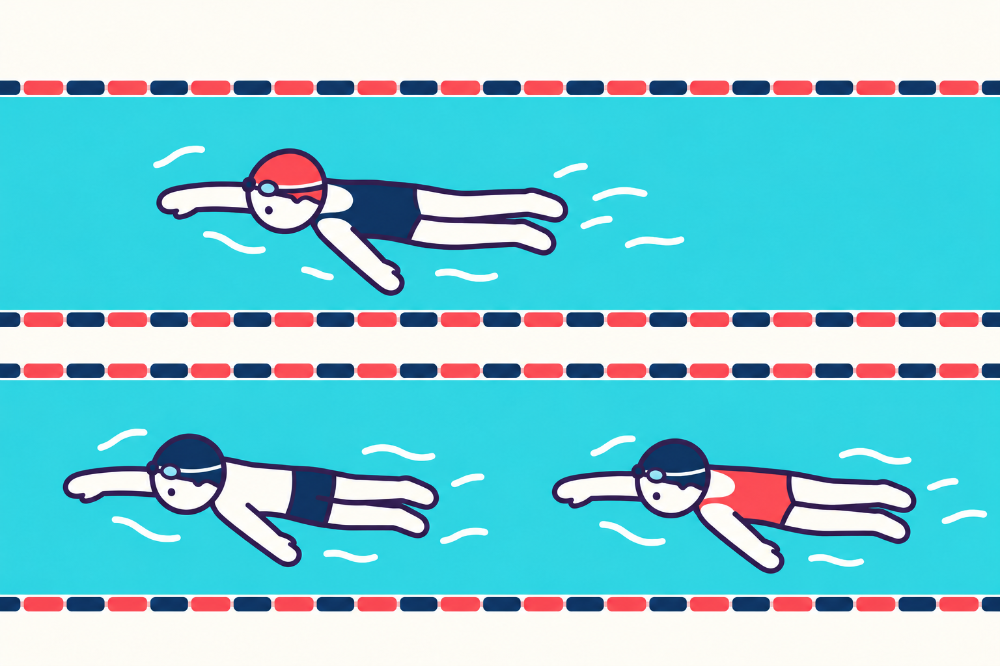
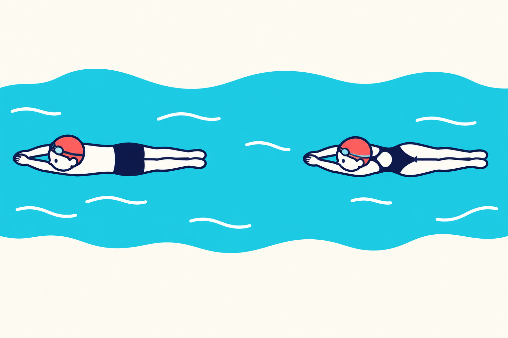
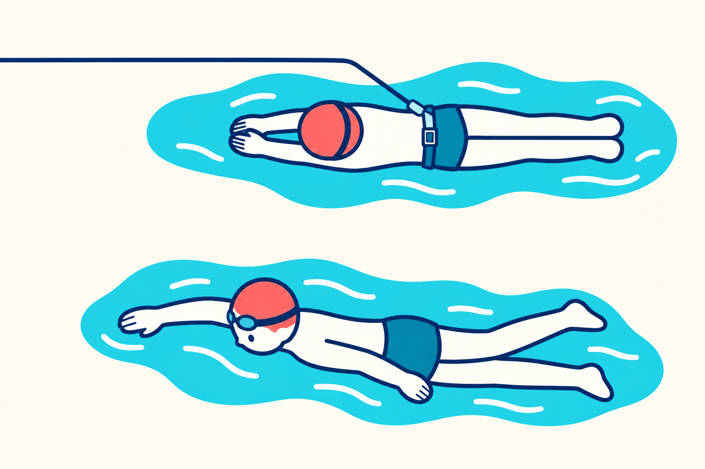
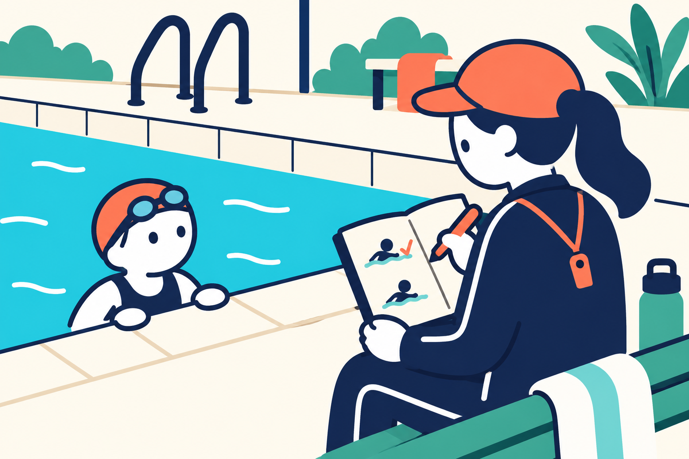

SWIMMING RESEARCH / 15
前の人の後ろだと、泳ぎやすい？
2026年11月1日 · 泳ぐ位置と負担

みんなで同じ速さで泳いでいるのに、先頭になったとたん、少しきつい。後ろに戻ると、ついていける。「自分の体力が急に変わったのかな」と思うかもしれません。
実は、泳ぐ位置によって、水から受ける抵抗が変わることがあります。前の人の後ろを泳ぐ「ドラフティング」を調べた研究では、一人で泳ぐときより負担が小さくなった例があります。ただし、どこでも同じ効果が出るわけではありません。
今日の持ち帰りは、人に近づくことではなく、泳ぎの記録に「どこを泳いだか」を一言添えること。 タイムを自分の力の証明にする前に、泳いだ条件を一緒に見てみましょう。
1｜同じ速さでも、きつさが変わる
水の中を進むと、身体は水から進みを妨げる力を受けます。これを「抵抗」と呼びます。腕や脚で進む働きをしていても、進みにくさが違えば、同じ速さを保つための負担も変わりえます。
前の人が通ると、その周りや後ろの水の動きが変わります。後ろの人は、一人で泳ぐときとは違う水の中を進むことになります。そこで抵抗が小さくなる場合がある、というのがドラフティングを考える入口です。前の人の身体につかまったり、足で引っぱってもらったりすることではありません。
速さと、きつさは別に見よう

前に人がいない条件。
前の人が変えた水の中を進む。
たとえば、同じ道を同じ速さで自転車で走っても、向かい風の日と穏やかな日では、こぐ大変さが違います。これは「速さが同じでも負担は同じとは限らない」と考えるためのたとえです。水の中の現象を、風だけで説明できるという意味ではありません。
また、後ろの水は、いつでも静かな通り道になるわけではありません。前の人のキックや波も届きます。「後ろなら必ず楽」「近いほどよい」という単純な決まりにはできません。図も位置関係を示す模式図で、実測した水流や力の大きさは描いていません。
2｜研究は「同じ速さでの負担」を比べた
2003年の研究では、11人が同じ速さで4分間泳ぎました。一人で泳ぐ条件と、前の泳者の後ろを泳ぐ条件を比較しています。後ろの条件では、前の人の足先から後ろの人の指先までの間隔を、0・50・100・150cmに変えました。泳ぐ速さをそろえた比較です。Chatard・Wilson、2003
後ろを泳ぐ四つの条件では、一人の条件に比べ、身体が取り込んだ酸素の量、心拍数、本人が感じるきつさなどが低くなりました。酸素の量は身体の反応を測った値で、息を止めたり、呼吸の回数を減らしたりする指示ではありません。同じ速さを保つための身体の負担が、小さくなったことを示す結果です。なお、これは参加者をまとめた結果で、全員に同じ変化が出るという保証ではありません。
研究で測るのは、足先から指先
← 進む向き ｜ 左が前の人・右が後ろの人

AB研究で比べた間隔／安全距離の指定ではありません
11人が、同じ速さで4分間。
一人と、前泳者の後ろの四つの間隔を比較。
後ろの条件で、酸素量・心拍数・きつさなどが低下。
4分は、この研究で泳いだ時間です。初心者に勧める練習時間ではありません。間隔の0cmも、研究で比べた位置の名前です。「足先と指先の前後方向の間がない」条件を指し、人の足に触れてよいという指示ではありません。50cmは0.5m、100cmは1m、150cmは1.5mです。図では、間隔を測る両端を見てください。
ここで区別したいのは、同じ速さで負担が減ることと、全力で泳いだタイムが縮むことです。同じ問いではありません。研究の4分間は、後ろになったから自由に速さを上げる比較ではありませんでした。練習を続けて上達したかを調べた結果でもありません。負担が減ったという結果を、そのまま「誰でも何秒速くなる」に変換することはできません。
引っぱってもらう測定で調べる「受動抵抗」と、自分で腕や脚を動かして泳ぐときの状態も分けます。この別の測定では、測られる後ろの人は、腕や脚で水をかかずに引かれて進みます。そのとき身体が受ける抵抗が「受動抵抗」です。前の人につかまって引いてもらう練習ではありません。泳いでいる最中の抵抗を、まるごと同じように測った言葉ではありません。抵抗の減少率を、そのままタイムの短縮率に置き換えないようにします。
3｜「近ければ近いほどよい」とは言えない
後ろにいると負担が変わるなら、前の人にぎりぎりまで近づけばよいのでしょうか。研究を読むときも、練習するときも、そこには一段、立ち止まる必要があります。
2009年の研究は、前の人が身体を動かさずに引かれる条件と、実際に泳ぐ条件を分け、後ろや横の位置で調べました。前の人が実際に泳ぐ条件でも、真後ろでは受動抵抗と酸素の取り込みが小さくなりました。ただし、身体を動かさない人の後ろと、実際に泳ぐ人の後ろでは、変化の大きさが違いました。前の人のキックによる水の動きも関わると考察されています。Janssenら、2009
測られる人の状態を区別

身体を動かさずに進むときの抵抗を調べる。
腕や脚の動き、前の人のキックも関わる。
この研究で、後ろの人の受動抵抗と酸素の取り込みが小さくなる点で最も有利とされた条件は、足先と指先の間が0.50mの真後ろでした。ただし、これは研究で比べた条件の中での結果です。一般プールで守るべき安全な間隔を調べた研究ではありません。また、横の位置では、真後ろと同じ結果になりませんでした。「ほかの人の近く」というひとまとめでは説明できないのです。
実際のプールでは、前の人が急に止まることも、壁で折り返すこともあります。水中で間隔を測り続けるのも簡単ではありません。研究の有利な位置と、周りの人にぶつからず泳げる位置は、別に考える必要があります。 距離の数字だけを取り出して再現しようとしないでください。
子どもや泳ぎ始めたばかりの人に、この研究を理由に接近して泳がせる必要はありません。施設や指導者が決める間隔と順序を守ります。人の後ろで呼吸や見通しが乱れるなら、楽になるという期待より、余裕を持てる泳ぎ方を優先します。
4｜次は「どこを泳いだか」を一言残す
次の練習では、いつもの記録に「先頭」「後ろ」「一人」のどれかを書き添えてみましょう。先頭は一緒に泳ぐ列の最初、後ろは列の中で前に人がいる位置、一人は列に加わらず単独で泳いだ場合です。これは本記事の観察案です。研究の間隔を再現したり、ドラフティングの効果を証明したりする実験ではありません。普段の安全な間隔を変えずにできます。
たとえば、同じ距離を泳いだ二本のタイムが似ていても、一本は先頭、もう一本は後ろなら、条件が違った可能性があります。タイムと一緒に「呼吸に余裕があった」「肩に力が入った」のような、きつさの言葉を一つ残すと、振り返る手がかりになります。時計がなければ、位置ときつさだけでも構いません。
記録に「位置」を一言添える

- 1いつもの間隔で泳ぐ
施設・指導者のルールを守り、接近しない。
- 2位置ときつさを残す
先頭／後ろ／一人。余裕があったかも一言。
- 3条件を見て相談する
一本のタイムだけで上達を決めない。
先頭で遅くなった一本を見て、すぐに「泳ぎが下手になった」と決めない。後ろで楽だった一本を見て、「もう一人でも同じように泳げる」と決めない。距離、泳法、休み時間、疲れなども合わせて見ます。一本だけの違いから、原因を一つに断定することはできません。
もし後ろのときだけ余裕があるなら、その記録を指導者に見せ、「先頭のときの速さは今の自分に合っているか」を相談する材料にできます。一人の記録を確かめたい日は、前に人がいない状態で安全に泳げるかを指導者と確認します。無理に追い越したり、混んだ場所で比較したりする必要はありません。
余裕が変わらなかった場合も、観察の失敗ではありません。位置の影響が小さかった可能性も、速さや疲れの違いで見えにくかった可能性もあります。その場で無理に答えを作らず、次の記録にも条件を残します。
最後に一つ考えてみてください。「後ろで同じタイムで泳げた。だから、一人でも同じ負担で泳げる」。この結論は、まだ出せません。泳ぐ位置が違うからです。タイムの隣に条件を一言。 それだけでも、自分の泳ぎを急いで評価しすぎないための手がかりになります。
参考文献と確認範囲
- Chatard JC・Wilson B（2003）Drafting Distance in Swimming. Medicine & Science in Sports & Exercise, 35(7), 1176–1181. 原著抄録、DOI
- Janssen M・Wilson BD・Toussaint HM（2009）Effects of Drafting on Hydrodynamic and Metabolic Responses in Front Crawl Swimming. Medicine & Science in Sports & Exercise, 41(4), 837–843. 著者所属機関の抄録、DOI
本文の研究説明は、原著抄録で確認できた範囲を中心としています。全文の未確認の細部は補っていません。子どもへの長期の上達効果や、一般プールの安全な間隔を確かめた記事ではありません。図の泳者・位置・手順は説明用の模式表現で、実測した水流、力、効果の大きさを示すものではありません。